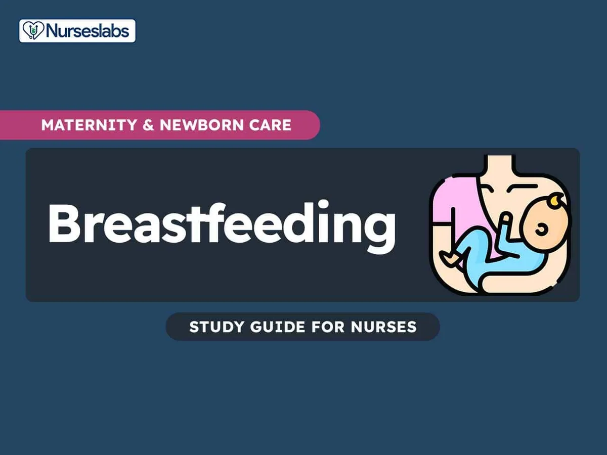

Expanded Nursing Uganda Explanation
Breastfeeding and its effects on child growth and development should be understood beyond a short definition. Link the concept to patient history, focused assessment, common risks, nursing priorities, documentation and evaluation of outcomes.
Contents, 15 sections (tap to expand)
01 Nutrition in Children
Balanced and sufficient nutritional intake is paramount for children. It serves multiple critical functions: promoting optimal growth and development, protecting and maintaining health, preventing nutritional deficiency conditions and various illnesses, and building reserves for periods of starvation or dietary stress. The term 'nutrition' itself is derived from 'nutricus', meaning 'to suckle at the breast', highlighting its fundamental connection to early life sustenance.
02 Defining Key Terms
- Nutrition: More broadly, nutrition is the intricate process by which consumed food is utilized for the nourishment and structural and functional efficacy of every cell in the body. In essence, it is the science that explores the relationship between food and health.
- Food: Refers to anything that nourishes the body, encompassing solids, liquids, and semi-solids. Food provides the essential components for growth, energy, and bodily functions.
03 Classification of Foods and Nutrients
- Food Classification: Foods are typically classified based on their primary macronutrient content: proteins, fats, and carbohydrates. They also contain essential micronutrients like vitamins and minerals. Foods can be categorized by their origin, such as animal (e.g., meat, dairy) or vegetable (e.g., fruits, vegetables, grains).
- Nutrients: These are the organic and inorganic complexes derived from food that the body requires for proper functioning. There are approximately 50 different essential nutrients that are normally supplied through the foods we eat.
- Macronutrients vs. Micronutrients: Macronutrients: Needed in larger quantities, these provide energy and building blocks for the body. This category includes carbohydrates, proteins, and fats.
- Micronutrients: Required in much smaller amounts, these are vital for various metabolic processes, enzyme functions, and overall health. This category includes vitamins and minerals.
04 Nutritional Requirements in Children
Nutritional requirements vary significantly among individuals, influenced by metabolic differences, genetic predisposition, age, sex, and activity levels. It's crucial to understand that no single food, except for mother's milk (for infants), meets all the essential nutritional requirements for a baby.
The primary components of a child's nutritional needs include:
Water is arguably the most critical nutrient for the maintenance of life. It constitutes a significant portion of a child's body weight (around 70%), underscoring its importance. Water is essential for:
- Digestion: Facilitates the breakdown of food and absorption of nutrients.
- Metabolism: Involved in countless biochemical reactions within cells.
- Renal Excretion: Helps the kidneys filter waste products from the blood and excrete them as urine.
- Temperature Regulation: Helps maintain a stable body temperature through mechanisms like sweating.
- Transportation: Acts as a medium for transporting nutrients, oxygen, hormones, and waste products throughout the body.
- Maintenance of Fluid Volume: Crucial for maintaining blood volume and cellular turgor.
- Growth: Essential for the formation of new cells and tissues.
Water is absorbed throughout the intestinal tract. A critical note: Lack of water (dehydration) can lead to death far more rapidly than starvation, emphasizing its immediate necessity.
The energy value of foods is measured in terms of calories (or kilocalories). The amount of energy produced varies depending on the type of food and how it's metabolized. Children require more calories per kilogram of body weight than adults, primarily due to their rapid growth and higher metabolic rates. Calorie requirements gradually decrease as a child approaches adulthood.
Factors influencing calorie requirements in children include:
- Body size and surface area.
- Rate of growth.
- Level of physical activity.
- Individual food habits.
- Climate (e.g., more energy needed in colder environments).
Consequences of imbalanced calorie intake:
- Deficiency: Inadequate calorie intake leads to weight loss, growth failure, and can result in protein-energy malnutrition (PEM).
- Excess: An excessive intake of calories results in increased weight gain and can lead to obesity, posing significant long-term health risks.
The average energy expenditure in children is distributed as follows:
- Basal Metabolism: 50% (energy needed for basic bodily functions at rest).
- Growth: 12% (energy used for tissue synthesis and development).
- Physical Activity: 25% (energy expended during movement and play).
- Fecal Loss: 8% (energy lost in undigested food).
- Specific Dynamic Action (Thermic Effect of Food): 5-10% (energy expended in the digestion, absorption, and metabolism of food).
Proteins are fundamental macronutrients, essential for a myriad of bodily functions, particularly in growing children. They are crucial for:
- Synthesis of Body Tissues: Vital for the rapid growth and development of new cells, muscles, organs, and other tissues.
- Body Repair: Involved in the repair and maintenance of existing tissues.
- Formation of Vital Compounds: Essential for the production of digestive juices, hormones, plasma proteins, enzymes, hemoglobin (Hb), and immunoglobulins (antibodies, which are critical for the immune system).
- Maintenance of Osmotic Pressure and Acid-Base Equilibrium: Proteins in the blood help regulate fluid balance and maintain the body's pH.
- Source of Energy: While primarily building blocks, proteins can be used as an energy source when carbohydrate and fat intake is inadequate.
Excess proteins, if consumed, are converted by the liver into fat and stored in body tissues. The human body requires 20 different amino acids (of which 9 are essential and must be obtained from the diet) to synthesize its own proteins. Protein requirements depend on age, sex, and physiological factors, gradually decreasing as age increases. Deficiency of protein intake can lead to growth failure and specific forms of protein-energy malnutrition, such as Kwashiorkor.
Carbohydrates are the body's primary and most readily available source of energy. They are essential for providing fuel for all bodily functions, including brain activity, muscle contraction, and maintaining body temperature. Beyond energy, they are also:
- Essential for Digestion and Absorption: Aid in the proper digestion and absorption of other foods.
- Protein-Sparing Effect: When sufficient carbohydrates are available, proteins can be spared from being used for energy and thus fully utilized for their primary roles in growth and various repair processes.
Excess carbohydrates are converted into glycogen and stored in the liver and muscles for later use, or converted into fat if stores are full. While essential, excessive intake of carbohydrates, particularly refined ones, can contribute to obesity, increase the risk of ischemic heart disease, cataracts, and dental caries.
Fats are a concentrated source of energy, supplying a significant portion (40-50%) of the energy needed for infants due to their high caloric density. Besides providing energy, fats serve several other crucial roles:
- Protection and Support: Provide cushioning and support for vital organs.
- Insulation: Help insulate the body, regulating temperature.
- Absorption of Fat-Soluble Vitamins: Necessary for the absorption of vitamins A, D, E, and K.
Deficiency of essential fatty acids can lead to growth retardation, skin disorders, and increased susceptibility to infections. Recommended daily intake for young children is approximately 25g/day, and for older children, around 22g/day, though these can vary based on individual needs and dietary recommendations.
Vitamins are organic compounds required in minimal amounts for various metabolic processes and overall health. They are categorized into:
- Fat-soluble vitamins: A, D, E, K (stored in the body's fatty tissues).
- Water-soluble vitamins: B-complex vitamins and Vitamin C (not stored in the body and need to be replenished daily).
Since water-soluble vitamins are not stored, a consistent, adequate daily dietary intake is crucial to prevent deficiency diseases.
Minerals are inorganic elements essential for a wide range of physiological functions. They are required by the human body for growth, repair of tissues, and regulation of vital body functions. Minerals often act as catalysts in biochemical reactions, facilitating enzyme activity. More than 50 different minerals are found in the human body, all of which must be derived from the foods we eat (e.g., calcium for bones, iron for blood, zinc for immunity).
05 Breastfeeding: The Optimal Infant Nutrition
Breastfeeding is widely recognized as the safest, cheapest, and best natural feeding method for infants. It comprehensively meets the nutritional, emotional, and psychological needs of the infant. Tragically, many infants in vulnerable populations die from preventable illnesses like diarrhea and acute respiratory infections partly due to insufficient breastfeeding practices. Breastfeeding offers numerous advantages:
- Nutritive Value: Breast milk contains all the essential nutrients in the right proportions needed for optimal growth and development of a baby up to 6 months of age. Its composition dynamically changes to meet the baby's evolving needs.
- Digestibility: Breast milk is easily digestible because it contains unique proteins that form soft curds, which are gentle on an infant's immature digestive system. It also contains the enzyme lipase, which aids in the digestion of fats and provides easily absorbable free fatty acids.
- Protective Value (Immunological Benefits): It is rich in critical immune factors, including IgA, IgM antibodies, macrophages, lymphocytes, lysozyme, and interferon. These components provide passive immunity, making a breastfed baby significantly less likely to develop infections, especially gastrointestinal and respiratory tract infections.
- Psychological Benefits: Breastfeeding promotes a profound close physical and emotional bond between mother and infant through frequent skin-to-skin contact, eye contact, and interaction, fostering security and attachment.
- Uterine Involution: Helps reduce the chance of postpartum hemorrhage by stimulating uterine contractions and aids in better uterine involution (the process by which the uterus returns to its pre-pregnancy size).
- Iron Stores Recovery: Promotes the recovery of maternal iron stores, reducing the risk of postpartum anemia.
- Natural Contraception: Provides a natural, though not foolproof, form of contraception, protecting the mother from pregnancy for the first 6 months, particularly when breastfeeding is carried out exclusively (Lactational Amenorrhea Method - LAM).
- Sense of Fulfillment: Provides a deep sense of satisfaction and fulfillment for the mother, contributing to maternal well-being.
- Weight Loss: Improves maternal slimming by consuming extra fat accumulated during pregnancy, as lactation requires significant energy expenditure.
- Convenience: It is highly convenient and time-saving, requiring no preparation, sterilization, or specific temperatures.
- Economical: Breastfeeding is economical, saving families significant money that would otherwise be spent on formula, bottles, and sterilization equipment.
- Environmental: Reduces environmental waste associated with formula production and packaging.
- Public Health: Contributes to healthier communities by reducing infant morbidity and mortality rates.
06 Preparation for Breastfeeding
Successful breastfeeding begins long before delivery:
- Antenatal Period: Preparation must begin during the antenatal period (pregnancy).
- Education on Benefits: Mothers should be thoroughly educated about the extensive benefits of breastfeeding for both themselves and their babies.
- Breast Examination: Examination of the breasts to identify any potential problems (e.g., inverted nipples) that might affect latch and provide solutions.
- Maternal Health: Prevention of micronutrient deficiencies in the mother, along with advice on rest, regular exercise, and hygienic measures, contributes to successful lactation.
- Counseling and Support: Antenatal counseling and strong family support are crucial for building the mother's confidence and preparing her for the breastfeeding journey.
07 Initiation of Breastfeeding
Early and proper initiation of breastfeeding is critical:
- Immediate Initiation: Breastfeeding should be initiated within the first half an hour to one hour of birth, or as soon as possible after delivery, known as "immediate" or "early" initiation.
- Benefits of Early Suckling: Early suckling provides warmth and security for the newborn and ensures they receive colostrum, the "first milk."
- Exclusive Breastfeeding: Mothers should be strongly advised for exclusive breastfeeding up to 6 months. This means giving no food or drink other than breast milk to neonates.
- Avoidance of Supplements: This includes no water, glucose water, animal milk, gripe water, indigenous medicines, or routine vitamin and mineral drops/syrups unless medically indicated.
08 Indicators of Adequate Breastfeeding (Signs of Sufficient Milk Intake)
Parents can look for several signs to confirm their baby is getting enough breast milk:
- Audible Swallowing: Hearing the baby swallow during feeds.
- Let-down Sensation: The mother may feel a tingling or fullness as milk is released from the breast.
- Wet Nappies: 6 or more wet nappies (diapers) in 24 hours.
- Breast Changes: Breasts feeling full before a feed and noticeably softer afterwards.
- Bowel Movements: Frequent, soft bowel movements, typically 3-8 times in 24 hours (can decrease after the first few weeks).
- Average Weight Gain: Consistent and appropriate weight gain as monitored by a healthcare professional.
- Baby's Demeanor: Baby sleeps well, does not cry excessively, has good muscle tone, and healthy skin.
09 Composition of Breast Milk
Breast milk composition dynamically changes at different stages in the postnatal period to precisely fulfill the evolving needs of the baby:
- Colostrum: Secreted during the first 3 days after delivery.
- Characterized by its thick, yellow appearance and small quantities.
- Extremely rich in antibodies and immune cells, along with higher amounts of proteins and fat-soluble vitamins, providing crucial early protection.
- Transitional Milk: Secreted during the first 2 weeks of the postnatal period, following colostrum.
- Bridge between colostrum and mature milk, with increased fat and sugar content as the milk volume increases.
- Mature Milk: Secreted from 10-12 days after delivery onwards.
- Appears more watery but contains all the necessary nutrients in balanced proportions for optimal growth and development of the baby.
- Preterm Milk: Produced by mothers who deliver prematurely.
- Contains specific nutrients and higher protein content tailored to the unique developmental needs and increased vulnerability of premature infants.
- Foremilk: The milk obtained at the beginning of a feed.
- It is more watery and contains more proteins, sugar (lactose), vitamins, and minerals, primarily quenching the baby's thirst.
- Hindmilk: The milk obtained towards the end of a feed, after the foremilk.
- Provides significantly more fat and thus more energy, crucial for the baby's growth and satiety. It's important for babies to get enough hindmilk.
10 Techniques of Breastfeeding
Proper technique ensures comfortable and effective breastfeeding for both mother and baby:
- Maternal Comfort: The mother should be comfortable and relaxed, both physically and mentally, before initiating a breastfeed.
- Correct Positioning: Ensure correct positioning of both the mother and the baby. The baby should be tummy-to-tummy with the mother, ear, shoulder, and hip in a straight line, and the head and body supported.
- Latching: Proper latching is crucial. The baby's chin should touch the breast, the cheek should touch the nipple, and the baby should open their mouth wide (rooting reflex). The nipple and most of the areola (the dark area around the nipple) should go into the baby's mouth, not just the nipple. This ensures effective milk transfer and prevents nipple soreness.
- Feeding Frequency: Breastfeeding can be offered at 1-2 hour intervals initially, and then on self-demand by the baby (feeding whenever the baby shows hunger cues).
- Duration of Feeding: The duration of a feed should be continued until the baby is satisfied and releases the breast on their own.
- Burping: Gently burp the baby after feeding to release swallowed air. However, if the baby has a good latch that prevents air entry, burping may not always be necessary.
- Post-Feeding Position: After feeding, the baby should be placed on their right side. Babies often fall asleep after feeding.
- Exclusive Breastfeeding Duration: Breastfeeding should be continued exclusively up to 6 months, as frequent suckling helps maintain an adequate milk supply for the baby.
- Complementary Feeding: At 6 months, complementary foods should be introduced, gradually and progressively, alongside continued breastfeeding up to 2 years or beyond. This is the process of transitioning the baby from solely breast milk to a varied family diet.
- Maternal Hygiene: The mother should maintain good hygienic measures, including daily bathing and washing breasts during baths, and wearing clean clothing to prevent contamination of breast milk.
11 Assessment of Nutritional Status
The nutritional status of an individual is a complex interplay of the adequacy of food intake (both in quality and quantity) and the individual's physical health. The purpose of nutritional assessment is to detect nutritional problems early and to develop a tailored plan to meet the child's specific nutritional needs. Common methods include:
- Dietary History: Involves collecting detailed information about the child's food intake, including types and quantities of cereals, pulses (legumes), vegetables, fruits, milk, meat, fish, eggs, oils, and sugar. This provides insight into dietary patterns and potential deficiencies or excesses.
- Clinical Examination: A thorough head-to-toe physical examination is performed to detect clinical signs of nutritional deficiency states. These can include hair changes (e.g., sparse, discolored hair in protein deficiency), anemia (pale conjunctiva), edema (swelling, often in severe protein deficiency), bleeding gums (Vitamin C deficiency), dental caries (poor oral hygiene/sugar intake), and enlarged thyroid gland (iodine deficiency).
- Anthropometry: A very valuable and widely used index for evaluating nutritional status. It involves taking precise body measurements, which are then compared to standardized growth charts. Key anthropometric measurements include: Height/Length: For assessing linear growth and identifying stunting.
- Weight: For assessing overall nutritional status and identifying underweight or overweight.
- Skinfold Thickness: Measures subcutaneous fat, indicating body fat reserves.
- Arm Circumference: Mid-upper arm circumference (MUAC) is a quick screening tool for acute malnutrition.
- Head Circumference: Important for infants and toddlers as an indicator of brain growth.
- Chest Circumference: Less commonly used alone but can be part of overall body proportion assessment.
- Biochemical Evaluation and Lab Tests: These involve the estimation of nutrient levels and their concentration in body fluids (e.g., blood tests for iron, vitamins). They can also assess enzyme levels or detect abnormal amounts of metabolites that indicate nutritional imbalances. While highly accurate, these tests are often time-consuming and expensive, usually performed in more complicated or ambiguous conditions.
- Functional Assessment: Emerging as an important aspect of diagnostic tools, functional assessments evaluate how nutritional status impacts the body's physiological functions. Examples include tests for nerve function (e.g., in thiamine deficiency) or assessing the working capacity of the heart (e.g., in severe malnutrition affecting cardiac muscle).
- Radiology: Radiological imaging can detect physical signs of nutritional deficiencies affecting skeletal health. Examples include: Retardation of Bone Age: Indicates chronic malnutrition affecting skeletal maturation.
- Osteoporosis: Can be seen in prolonged calcium or Vitamin D deficiency.
- Classical Signs of Scurvy or Rickets: Specific bone changes indicative of severe Vitamin C or Vitamin D deficiency, respectively.
12 Nursing Uganda Clinical Lens
Use Breastfeeding and its effects on child growth and development as a practical nursing topic, not only a memorized definition. Adapt assessment and care to age, weight, development, caregiver knowledge and family support.
- What to understand first: define breastfeeding and its effects on child growth and development, identify the normal or expected pattern, then explain what changes when the patient is unwell.
- Why it matters in care: the nurse must recognize risk early, explain findings clearly, document accurately and know when to escalate.
- How to revise it: connect each point to assessment, nursing diagnosis or care problem, intervention, rationale and evaluation.
13 Assessment Guide
- Airway, breathing, circulation, hydration, temperature, feeding, activity and danger signs.
- Weight-based medicines, immunization status, growth, development and caregiver concerns.
- Signs that may be subtle in children, including lethargy, poor feeding, fast breathing or convulsions.
14 Nursing Priorities, Rationales and Outcomes
- Use age-appropriate communication and involve the caregiver.
- Prevent dehydration, hypothermia, medication errors and delayed referral.
- Teach home care, danger signs and follow-up clearly.
The rationale for these priorities is patient safety: nursing actions should prevent deterioration, reduce discomfort, support recovery and create clear evidence for the next caregiver.
- Expected outcome: The child is clinically improving, caregiver instructions are understood and follow-up is arranged.
15 Patient Teaching and Revision Check
- Explain breastfeeding and its effects on child growth and development in simple language the patient or caregiver can repeat back.
- Teach warning signs, medicine or follow-up instructions, hygiene or lifestyle points where relevant.
- For exams, prepare a short answer using: definition, causes or risk factors, signs, assessment, management, complications and prevention.
- For ward practice, document baseline findings, actions taken, patient response and the plan for review.
Illustrations and Diagrams (1)

Related Video Lectures
Watch nursing lecture videos on YouTube for this topic. Opens in a new tab.
Watch on YouTubeExternal link: YouTube may use its own cookies and terms. Nursing Uganda is not affiliated with YouTube.